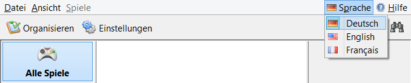

<h2 style="color: #5F9EA0;">Aussehen</h2>
<h1 style="color: #2F4F4F;">Sprache wählen</h1>
So kann die Benutzersprache in emuBro geändert werden:
<ul>
<li>In der Menüleiste oben rechts den Menüpunkt <strong>"Sprache"</strong> anklicken.</li>
<li>Die gewünschte Sprache wählen.</li>
</ul>
</img>
